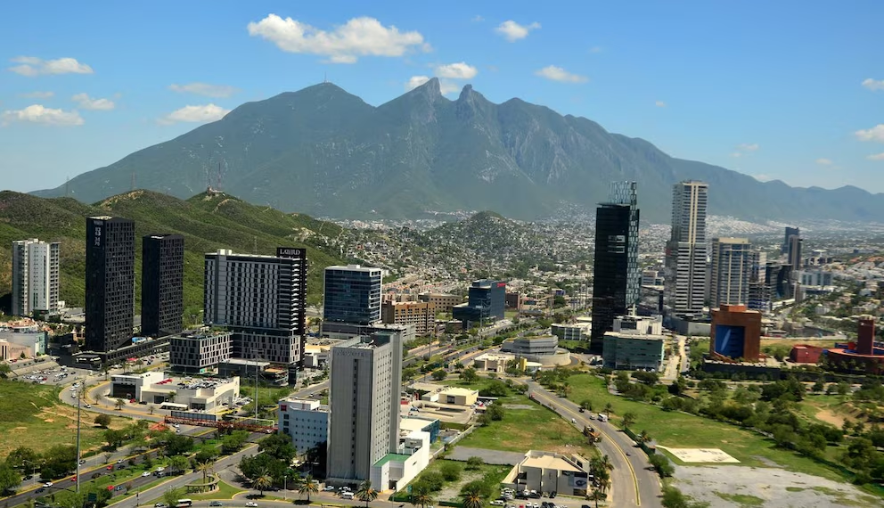

Mercado Hecho en Nuevo León
Productores y marcas locales se reúnen del al , en la Nave Lewis, Parque Fundidora, Monterrey.
Mas info en: Parque Fundidora - Mercado Hecho en Nuevo León

Monterrey es la capital y ciudad más poblada del estado mexicano de Nuevo León, además de ser la cabecera del Municipio de Monterrey. Su zona metropolitana es una de las más grandes de México, superando los 5 millones de habitantes.
Es famosa por ser uno de los principales centros industriales, financieros y educativos del país, además de contar con una identidad cultural muy marcada dentro del norte de México.
Monterrey es reconocida por su alta actividad económica y por ser sede de importantes universidades e instituciones tecnológicas.
Se localiza a unos 200km de la frontera con Texas, Estados Unidos. A su vez, a unos 900km de la Ciudad de México.
Monterrey se distingue por estar rodeada de imponentes formaciones montañosas, como el Cerro de la Silla, símbolo icónico de la ciudad, y la Sierra Madre Oriental.
Su desarrollo urbano combina rascacielos modernos con espacios culturales de referencia, como el Museo de Arte Contemporáneo (MARCO) y el Parque Fundidora, un antiguo complejo industrial reconvertido en uno de los parques urbanos más grandes de Latinoamérica.
Esta sería una breve lista de las actividades que puedes realizar al visitarnos:
Monterrey combina naturaleza, cultura e innovación en una misma ciudad. Sus montañas, su oferta museística de nivel internacional y su dinamismo económico la convierten en un destino distinto, ideal para quienes buscan turismo urbano sin dejar de lado el aire libre y la buena gastronomía.
Productores y marcas locales se reúnen del al , en la Nave Lewis, Parque Fundidora, Monterrey.
Mas info en: Parque Fundidora - Mercado Hecho en Nuevo León
Desde el hasta el , ven a disfrutar de presentaciones, talleres y puestos de editoriales en el centro de la ciudad.
Mas info en: Feria del Libro Regional
Gracias por visitar el sitio, espero hayas encontrado información interesante. Cada semana se actualizará con más información.